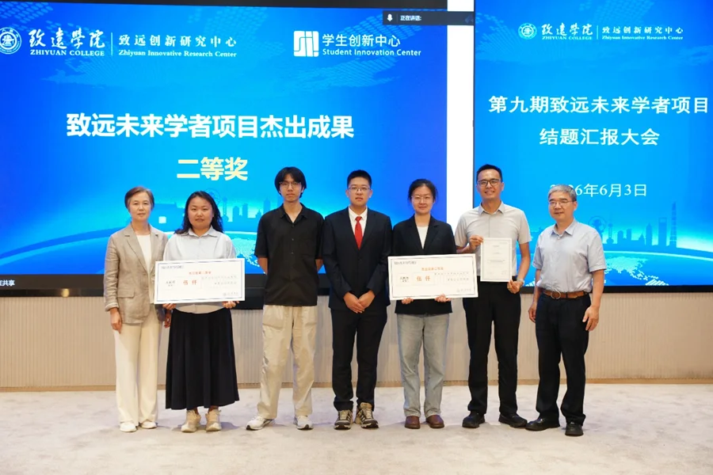
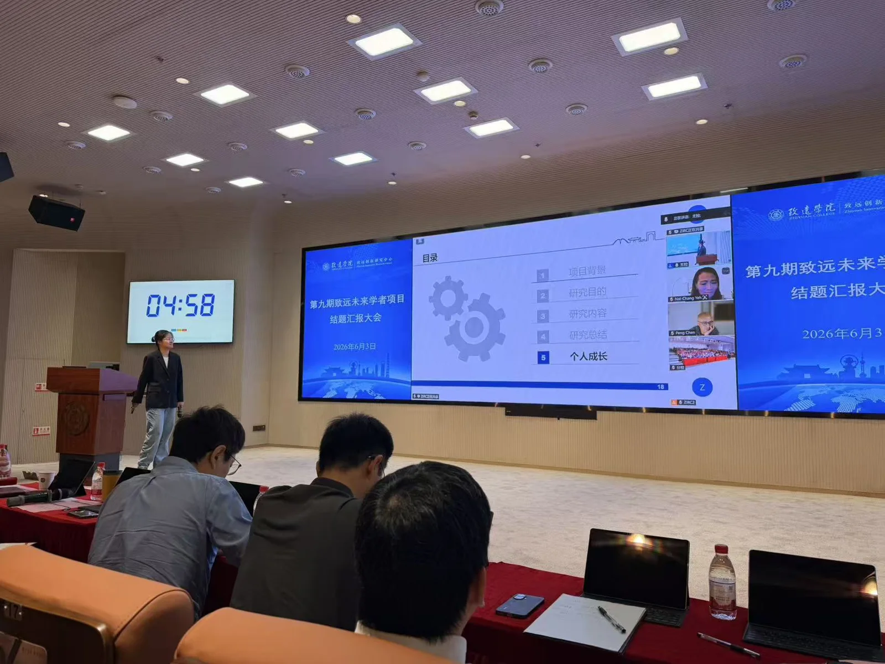
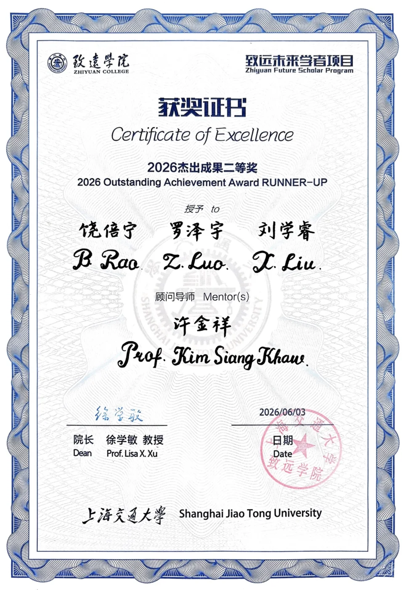

Congratulations to Beining Rao【饶倍宁】, Zeyu Luo【罗泽宇】 and Xuerui Liu【刘学睿】! Their project “Testing bound-state quantum electrodynamics with positronium and searching for new physics beyond the Standard Model” (通过正电子偶素检验束缚态量子电动力学理论并且寻找超越标准模型的新物理), mentored by Kim Siang Khaw, won the 2026 Outstanding Achievement Award, Second Prize (杰出成果二等奖) at the final report meeting of the 9th Zhiyuan Future Scholars Program (第九期致远未来学者项目结题汇报大会) on 3 June 2026.


The Zhiyuan Future Scholars Program, run by SJTU’s Zhiyuan College and its Zhiyuan Innovative Research Center, supports teams of undergraduates working on a research project under a faculty mentor over several years. Positronium — a bound state of an electron and its antiparticle, the positron — is one of the cleanest systems for testing bound-state QED, and precise measurements of its properties can also be used to search for physics beyond the Standard Model. Beining, Zeyu and Xuerui worked on the project in our group from 2023 to 2026.




Beining has since started a PhD at Indiana University and Zeyu a PhD at TDLI. See our other student research projects.
祝贺饶倍宁、罗泽宇和刘学睿！由许金祥指导的项目“通过正电子偶素检验束缚态量子电动力学理论并且寻找超越标准模型的新物理”（Testing bound-state quantum electrodynamics with positronium and searching for new physics beyond the Standard Model），在2026年6月3日举行的第九期致远未来学者项目结题汇报大会上荣获2026年度杰出成果二等奖。
致远未来学者项目由上海交通大学致远学院及其致远创新研究中心组织实施，支持本科生团队在导师指导下开展为期数年的科研项目。正电子偶素是电子与其反粒子——正电子——构成的束缚态，是检验束缚态量子电动力学（QED）最“干净”的体系之一，对其性质的精密测量还可用于寻找超越标准模型的新物理。2023年至2026年，饶倍宁、罗泽宇和刘学睿在课题组开展了该项目研究。
目前，饶倍宁已赴印第安纳大学攻读博士学位，罗泽宇则在李政道研究所攻读博士学位。更多内容请参阅课题组其他学生科研项目。